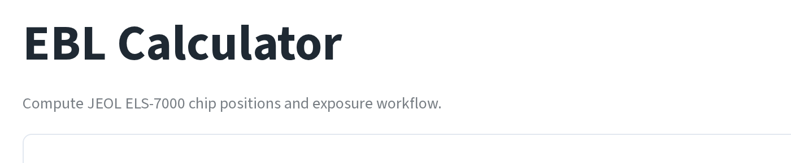
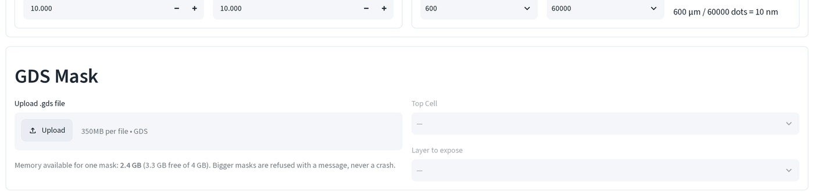
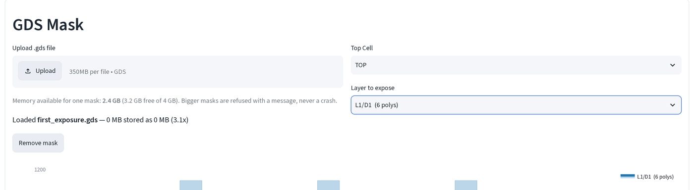
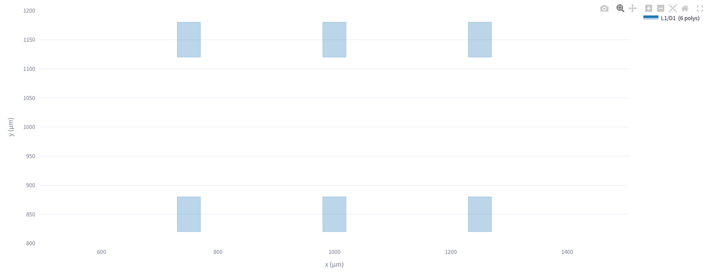
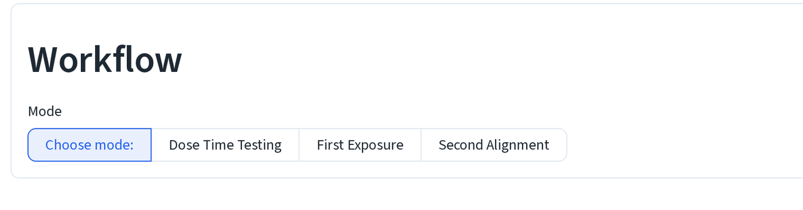

電子束微影計算機基礎¶
從 GDS 遮罩計算 JEOL ELS-7000 晶片位置與曝光工作。本頁涵蓋開啟工具、載入 遮罩、閱讀檢視器，之後的三個工作流程頁面（劑量時間測試、 首次曝光、二次曝光）都是在本頁 的基礎上進行。
1. 開啟計算機¶
電子束微影計算機 (EBL Calculator) 位於平台側邊欄的 製程
(Process) 底下。它也可以獨立執行，不需要平台：python
launch_ebl_calculator.py 會在自己旁邊建立一個本機虛擬環境，安裝頁面所需的
套件，並直接啟動 tools/ebeam/calculator.py。獨立模式沒有密碼關卡，側邊欄
也沒有其他工具，只有這一頁。

獨立模式也會提高上傳上限。平台的上傳上限是 350 MB（依部署容器大小設定）；
launch_ebl_calculator.py 則改以工作站自身的 RAM 來決定上限，最高可到
4 GB。
2. 上傳遮罩¶
- 在 GDS 遮罩 (GDS Mask) 底下的 上傳 .gds 檔案 (Upload .gds file)
放入一個
.gds檔。

上傳區下方那一行，單一遮罩可用記憶體 (Memory available for one mask)， 不是固定數字。它是當下讀取的可用 RAM，所以同一個檔案在閒置機器上能載入， 一小時後在忙碌的機器上可能就會被拒絕。超出這個預算時，程式會做以下兩種 處理之一，絕不會當機：
- 太大無法整個載入、但足以量測：改成以串流方式讀取，以約 4 MB 為單位 讀回，只保留精簡後的資訊（邊界框、覆蓋率），因此你仍能看到概覽並得到精確 的時間估計，並附上說明此狀況的警告訊息。
- 兩種都太大：會出現一則明確指出問題的錯誤訊息（檔案損毀，或連串流都 不夠的過小預算）。
本指南各頁使用的範例遮罩檔都只有幾 KB，所以這一行永遠會顯示無聊的 0 MB 壓縮為 0 MB，需要檢查的是比例與這一行是否存在，而不是數字本身。
3. 選擇元件與圖層¶
- 檔案解析成功後，頂層元件 (Top Cell) 與 要曝光的圖層 (Layer to
expose) 會自動填入。先選頂層元件，再選你想檢視或接下來要曝光的
(layer, datatype)配對。

一次只會顯示一組 (layer, datatype)。如果你的遮罩把一個工作拆到好幾個
datatype 上（例如對準標記在一個、焊墊在另一個、精細特徵在第三個，就像本
指南使用的範例遮罩一樣），就得一次選一個。
4. 閱讀檢視器¶
- 選擇器下方的圖會畫出所選圖層。小型圖層（少於 50,000 個多邊形）會精確 畫出每一個多邊形，如下圖，來自範例首次曝光遮罩的六個基極焊墊：

超過 50,000 個多邊形後，頁面就不會逐一畫出每個形狀（瀏覽器會卡住），而是 改用低解析度的覆蓋率光柵圖，並附上一個可強制顯示完整細節的核取方塊。在密集 圖層的概覽圖上拖曳框選，可以只重新以完整細節讀取該區域，適合在有上千個元件 的遮罩中檢查單一元件。
三種使用本頁的方式¶
遮罩載入後，頁面最下方的 曝光流程 (Workflow) 區塊決定頁面接下來要用它 做什麼：

劑量時間測試 (Dose Time Testing) 會把同一個遮罩複製到一格一格的載台 位置上，逐格遞增劑量，讓你能在真正對元件下手之前，從顯影結果中挑出可用的 劑量，見劑量時間測試。
首次曝光 (First Exposure) 用同尺寸網格鋪滿寫入場並置中於晶片上，不涉及 任何標記，是寫在裸晶片上的第一個圖案。見首次曝光。
二次對準 (Second Alignment) 會把新圖層對準到晶片上先前曝光留下的標記， 讓新圖案相對於既有圖案落在正確的位置。見二次曝光。
要知道三種模式依序在 JEOL 系統中該輸入哪些數字，見工作編號表。